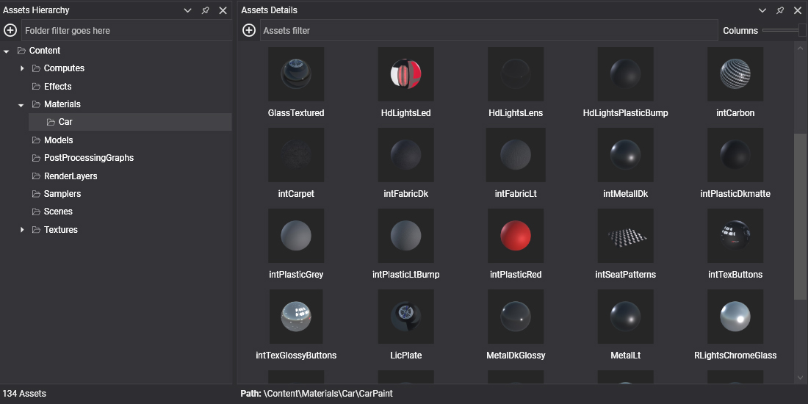

Assets

An asset is any piece of content that your project uses: a 3D model, a texture, a sound, or an engine object such as a material, a sampler or a render layer. Evergine Studio shows the assets of the project in the Project Explorer and Assets Details panels, lets you edit them in dedicated editors, and exports them to an optimized binary format when you build the application.
Every asset is described by a small YAML metafile that stores its ID, its properties and the per-profile settings. Components and other assets reference an asset through that ID, so you can rename or move it without breaking anything.

A source file (when there is one) and its metafile are combined with the settings of the target profile and exported to a binary file named after the asset ID.
Types of assets
Assets with a source file
These assets wrap a file created with another application, such as Blender, Photoshop or an audio editor. Import the file into Evergine Studio and it creates the asset for you.
| Asset | Description | Source file extensions |
|---|---|---|
| Texture | An image used as a texture. | .jpg, .jpeg, .png, .bmp, .webp, .tga, .dds, .ktx, .ktx2, .hdr |
| Model | A 3D model with meshes, materials, skeletons and animations. | .gltf, .glb, .fbx, .obj, .dae, .3ds |
| Sound | Audio used for music and sound effects. | .wav, .mp3, .ogg |
| Font | A font used to render text. | .ttf, .otf |
| File | Any other file. It is copied to the application output as is, and you read it with LoadRaw<T>. |
Any other extension |
Assets created in Evergine Studio
These assets have no external source. You create them from the Assets menu, and some of them can also be built from code.
| Asset | Description |
|---|---|
| Scene | The main asset of an application. It stores an entity hierarchy with its components and the scene managers. |
| Prefab | A reusable entity hierarchy that can be instanced in any scene. Created from an entity in the Scene Hierarchy panel. |
| Effect | A shader written in HLSL, with Evergine metatags. Evergine translates it to the shading language of each graphics backend. It can be a graphics, compute or library effect. |
| Material | Describes how a surface is rendered. It references an effect and sets its parameters, such as textures and colors. |
| Render Layer | Rasterizer, blend and depth-stencil state shared by materials. Every material uses one. |
| Sampler | How a texture is sampled: filtering and addressing (wrap, clamp, mirror). |
| Particle System | The emitter, shape and forces of a particle effect. |
| Post-Processing Graph | A node graph of compute effects applied to the rendered image, such as tone mapping, antialiasing or ambient occlusion. |
Where assets live
Assets are stored in the Content folder of your project, and Evergine Studio shows that folder as the root of the Project Explorer. Add-ons such as Evergine.Core add their own content under Dependencies. Dependency assets are read-only, marked with a lock icon, but you can use them in your scenes and materials like any other asset.